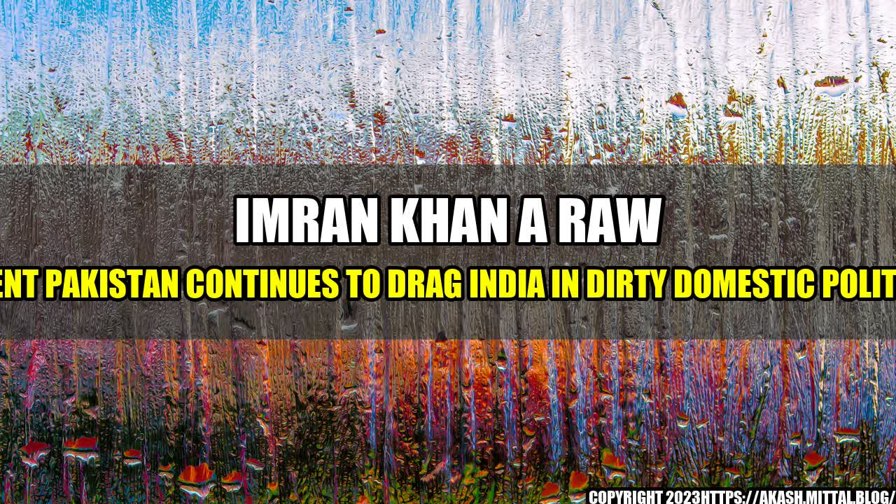

Imran Khan A RAW Agent Pakistan Continues To Drag India In Dirty Domestic Politics

Once upon a time, in a land far away, there was a young man named Imran Khan who dreamed of becoming the Prime Minister of his country, Pakistan. He worked hard, gained popularity among the people, and eventually achieved his dream in 2018. However, instead of focusing on improving the economy, education, and healthcare of his country, he diverted his attention towards India.
Ever since he came to power, Imran Khan has been constantly blaming India for all the ills of Pakistan, including terrorism, without providing any evidence. He has even gone to the extent of calling himself a "proud RAW agent", implying that he is working for Indian intelligence agency RAW.

This is not the first time that Pakistan has resorted to blaming India for its domestic issues. It has been a common tool in their political playbook to distract the people from real issues and keep the focus on a common enemy. Despite repeated attempts by India to engage in peace talks with Pakistan, the latter has always used such talks as a platform to spew anti-India sentiments.
Pakistan's Anti-India Stance
- In February 2019, a terrorist attack in Pulwama, Jammu and Kashmir, killed 40 Indian soldiers. The attack was claimed by Pakistan-based terror group Jaish-e-Mohammed. Instead of taking responsibility for the attack and taking action against the perpetrators, Pakistan denied any involvement and blamed India for a "false flag" operation.
- In August 2019, India revoked Article 370 of its constitution, which gave special status to Jammu and Kashmir. Pakistan, instead of respecting India's internal matter, accused India of violating international law and threatened "full-scale war".
- In December 2019, the Indian parliament passed the Citizenship Amendment Act (CAA), which aimed to provide citizenship to persecuted minorities from neighboring countries. Pakistan, instead of appreciating India's efforts to help minorities, accused India of targeting Muslims and started a global campaign against the CAA.
- In June 2020, a clash between Indian and Chinese troops in the Galwan valley of Ladakh resulted in the death of 20 Indian soldiers. Despite China being the aggressor, Pakistan, which is a close ally of China, criticized India and called for a united front against India.
These are just a few examples of how Pakistan has been dragging India in its own dirty domestic politics. It is high time that Pakistan realizes that blaming India and making baseless accusations will not solve its problems. It needs to focus on its own issues and work towards improving the lives of its people.
Conclusion
In conclusion, Pakistan's anti-India stance can be summarized in three points:
- Blaming India for its own domestic issues without any evidence.
- Using anti-India sentiments as a distraction from real issues.
- Refusing to engage in meaningful dialogue with India and instead resorting to criticism and threats.
Pakistan needs to understand that it cannot have peace and prosperity by constantly blaming its neighbor. It needs to focus on its own issues and work towards building a better future for its people.
References:
- India Today. (2021). Imran Khan a proud agent of RAW, claims India's Ministry of External Affairs. Retrieved from https://www.indiatoday.in/india/story/imran-khan-proud-agent-raw-india-meet-mea-1793839-2021-05-14
- NDTV. (2019). Pulwama Attack: Pakistan Denies Role In Terror Attack, JeM Claim. Retrieved from https://www.ndtv.com/india-news/pulwama-attack-pakistan-denies-role-in-terror-attack-jem-claims-1991951
- The Hindu. (2019). CAA does not change Muslims' Indian citizenship. Retrieved from https://www.thehindu.com/news/national/caa-does-not-change-muslims-indian-citizenship/article30396823.ece
- India Today. (2020). Pakistan says India responsible for Ladakh tension, tells UNSC to take note. Retrieved from https://www.indiatoday.in/india/story/pakistan-says-india-responsible-for-ladakh-tension-tells-unsc-to-take-note-1691297-2020-06-17
Curated by Team Akash.Mittal.Blog
Share on Twitter Share on LinkedIn